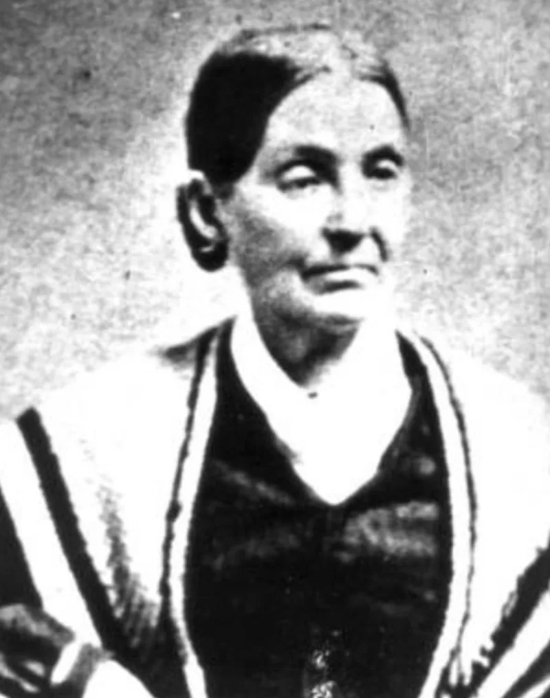
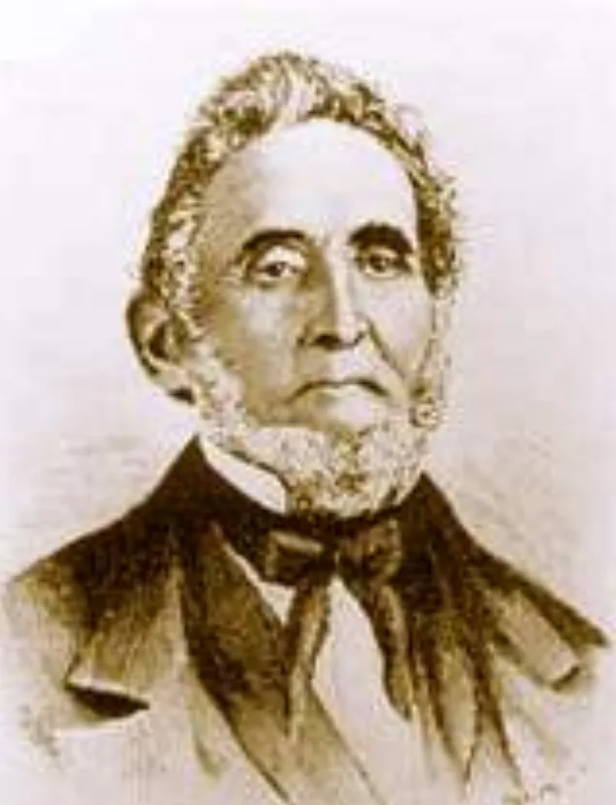
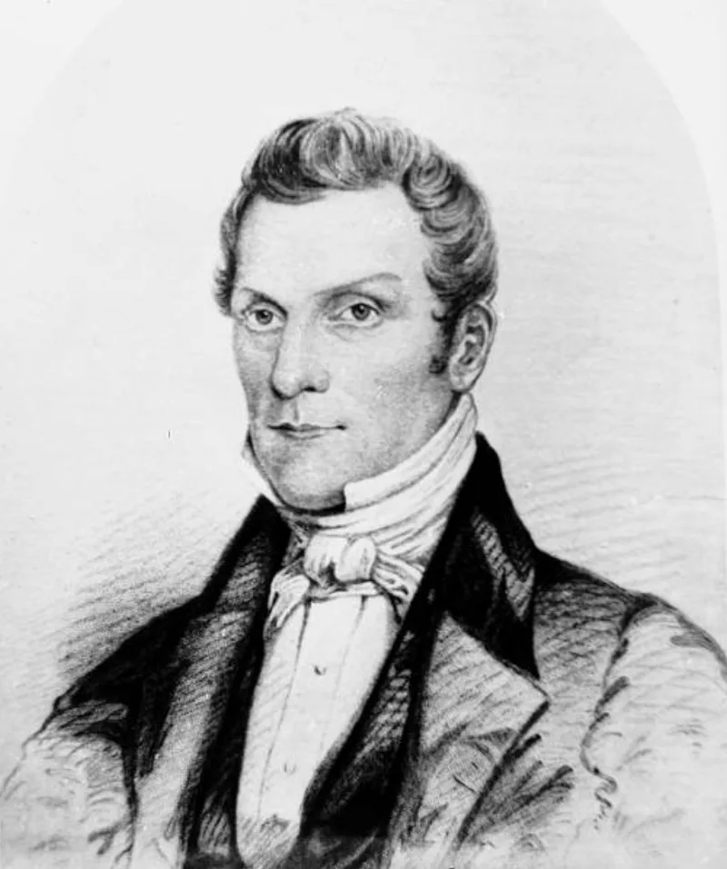

LDS scholars have a real answer here. Say so before your friend does.
Joseph Smith was killed in June, leaving no clear plan for who followed. The movement split.
Sidney Rigdon, his counselor. The Quorum of the Twelve under Brigham Young.
And James Strang, who produced a letter of appointment dated June 1844 — now at Yale's Beinecke Library, catalogued as attributed.
Strang then dug up his own metal plates at Voree, Wisconsin, in 1845, before four witnesses. There is no direct contemporary evidence that those witnesses ever took it back.
That complicates any appeal to the Book of Mormon witnesses.
The people who knew Joseph best. His widow Emma stayed in Nauvoo and married Lewis Bidamon, who was not a Mormon.
His mother Lucy and his brother William never gathered to Utah. His son Joseph Smith III became prophet of the rival RLDS church at Amboy, Illinois, in 1860.
And none of the Three Witnesses went west in 1847. All had been excommunicated by 1838.
Oliver Cowdery was rebaptised in 1848 but died before reaching Utah. Martin Harris came only in 1870.
David Whitmer never returned.
In her Last Testimony, printed in the Saints' Herald on 1 October 1879, she denied that Joseph practised polygamy. "He had no other wife but me."
That succession never depended on family. Joseph conferred the keys of the kingdom on the Quorum of the Twelve before he died.
On 8 August 1844 the great majority of Nauvoo Saints sustained the Twelve over Rigdon. Strang's letter is judged a forgery on handwriting and postal grounds.
Apologists say several Voree witnesses later distanced themselves. On Emma, FAIR argues the documents contradict her, including sealing records from 1843.
Her denials are explained four ways. She wanted to protect her sons.
She hated polygamy. She was in property disputes with Brigham Young.
And she was loyal to the church her son led. Proximity to a prophet, they note, is not the biblical test of truth.
"Why didn't his mother, his widow or his son follow Brigham Young?"



The keys went to the Twelve, and most of Nauvoo sustained them in August 1844.
Apologists answer that succession did not depend on family. Joseph conferred the keys of the kingdom on the Quorum of the Twelve before his death. On 8 August 1844 the great majority of Nauvoo Saints sustained the Twelve over Rigdon.
Strang's letter of appointment is judged a forgery on handwriting and postal grounds. Apologists contend that several Voree witnesses later distanced themselves from Strang.
On Emma, FAIR argues that her denials are contradicted by heavy documentary evidence, including sealing records naming her participation in 1843. They explain them four ways. She wanted to protect her sons. She opposed polygamy. She was in property disputes with Brigham Young. And she was loyal to the movement her son led.
Family closeness, they note, is not the biblical test of truth.
Arguable both ways, but their answer needs Emma lying for 35 years.
Every fact here is conceded on all sides. No written plan for succession was produced. Emma and the Smith family rejected Brigham Young. Joseph Smith III led the rival RLDS church from 1860. And Emma denied polygamy to the end, in her 1879 'Last Testimony'.
The keys-to-the-Twelve argument has real historical support. Most of Nauvoo did follow the Twelve.
But the defence costs more than its makers say. It requires holding that the prophet's own widow lied in public, steadily, for thirty-five years. Meanwhile friendly witnesses are treated as beyond question.
And the usual way of dismissing Strang's plates, and witnesses who never took it back, fits the Book of Mormon's own witnesses just as well.